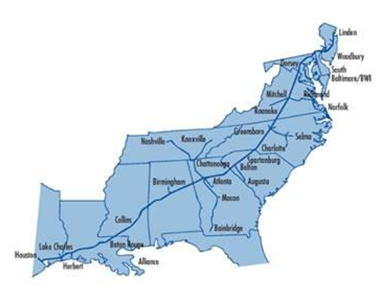
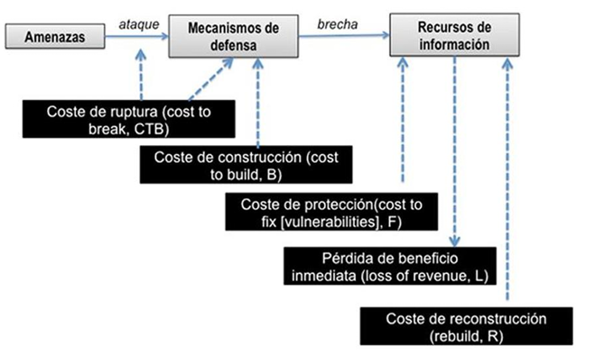
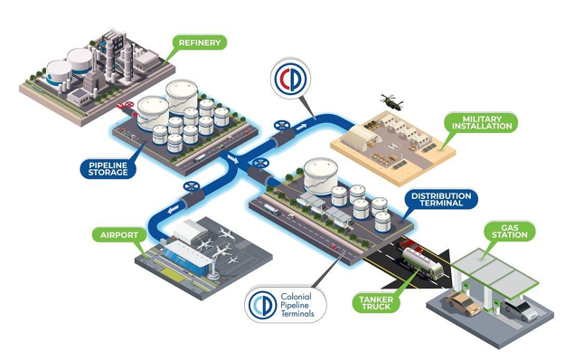

En la actualidad, las empresas dependen completamente de la tecnología para operar, pero esto también las hace más vulnerables a los ciberataques. El caso de Colonial Pipeline es un ejemplo perfecto de cómo un ataque no solo afecta los sistemas informáticos, sino que puede paralizar operaciones críticas, generar pérdidas millonarias y hasta afectar a toda una región. Lo más preocupante es que no se trató de una vulneración súper sofisticada, sino de algo tan básico como una cuenta VPN sin MFA y una contraseña filtrada.
Esto nos muestra que muchas veces el eslabón más débil no es la tecnología, sino la falta de controles básicos de seguridad. Por eso, analizar este tipo de incidentes nos ayuda a entender que la ciberseguridad no es solo un tema de técnicos, sino que debe ser prioridad en la mesa de decisiones de cualquier organización.
En un entorno empresarial caracterizado por la alta dependencia de sistemas digitales y la interconexión entre tecnologías de la información (TI) y tecnologías operativas (OT), la ciberseguridad se ha convertido en un factor crítico para la continuidad del negocio, la estabilidad financiera y la protección de activos estratégicos. Para las organizaciones que operan infraestructura crítica, una disrupción cibernética no solo representa un incidente tecnológico, sino un evento con potencial de impacto económico, reputacional y operativo a gran escala.
Durante los últimos años, los ataques de tipo ransomware han evolucionado hacia esquemas altamente sofisticados, impulsados por grupos criminales organizados que operan bajo modelos empresariales estructurados, como el Ransomware as a Service (RaaS). Estos ataques combinan técnicas de acceso no autorizado, exfiltración de información y cifrado de sistemas, con el objetivo de maximizar la presión financiera y operativa sobre las organizaciones afectadas. Como resultado, incluso empresas con capacidades técnicas avanzadas pueden verse obligadas a interrumpir operaciones críticas ante la falta de controles preventivos y de resiliencia adecuados.
El presente análisis tiene como objetivo evaluar de manera técnica, económica y estratégica un ciberataque real ocurrido en una infraestructura crítica, con el fin de identificar las causas raíz, el desarrollo del incidente, su impacto sobre los principios fundamentales de la seguridad de la información y las consecuencias operativas y financieras asociadas. El caso seleccionado corresponde al ataque de ransomware sufrido por Colonial Pipeline Company en 2021, considerado un referente a nivel internacional por su impacto directo en el suministro energético y por las implicaciones que generó en materia de gestión de riesgos cibernéticos.
A partir de fuentes técnicas verificables, reportes oficiales y análisis especializados, este documento examina los actores involucrados, los vectores de ataque empleados y las debilidades estructurales que facilitaron el incidente. Asimismo, se evalúan los efectos del ataque sobre la confidencialidad, integridad y disponibilidad (CIA) de los sistemas afectados, se estiman los costos directos e indirectos derivados del evento y se contrasta la postura de seguridad de la organización con marcos internacionales de referencia, como NIST Cybersecurity Framework, ISO/IEC 27001 y regulaciones aplicables en materia de protección de la información. Finalmente, se formulan recomendaciones estratégicas orientadas al fortalecimiento de la gobernanza de ciberseguridad y a la mitigación de riesgos futuros en organizaciones que operan activos críticos.
| Fase | Fecha / Periodo | Hito o Evento Clave | Descripción del Suceso |
|---|---|---|---|
| I. Infiltración | Antes del 7 de mayo | Acceso inicial | Los atacantes vulneran la red (probablemente vía VPN/RDP robado o Phishing). |
| 7 de mayo (Madrugada) | Exfiltración masiva | Se roban aproximadamente 100 GB de información en un lapso cercano a dos horas antes de ejecutar el cifrado de los sistemas. | |
| II. El Ataque | 7 de mayo (Mañana) | Activación de DarkSide | El grupo DarkSide ejecuta el ransomware, cifrando los sistemas de Tecnologías de la Información (TI) internos y externos de Colonial Pipeline. |
| 7 de mayo (Día) | Parada preventiva | Aunque el ataque afectó sistemas TI, la insuficiente segmentación entre entornos TI y OT obliga a Colonial Pipeline a detener preventivamente la operación del oleoducto para evitar una posible propagación. Colonial avisa inmediatamente al Gobierno, el Departamento de Energía y al FBI que están siendo atacados. Colonial Contrata a FireEye para mitigar los efectos del ransomware. (Empresa de ciberseguridad privada). | |
| 7 de mayo | Efectos del Hackeo | Colonial Pipeline detuvo la operación de aproximadamente 5500 Millas (8850 Km) de oleoducto, el cual proveía a la costa este en aproximadamente 45% del petróleo total en la zona. Colonial Pipeline debe de dar una explicación a sus clientes sobre el hackeo y como esto evitara que se suministre gasolina y combustible de avión, lo cual crea especulaciones sobre el precio de estos. | |
| 7-8 de mayo (Noche) | Pago del rescate | La empresa paga 75 BTC (~$5M USD) a las pocas horas del ataque. | |
| III. Crisis | 8-10 de mayo | Escasez, pánico y respuesta gubernamental | La interrupción del oleoducto provoca desabasto progresivo en la Costa Este. Se registran compras de pánico en gasolineras, afectaciones al sector aéreo y reuniones de emergencia en la Casa Blanca. El impacto en el precio del combustible es inicialmente limitado, con incrementos marginales durante los primeros días. |
| 8 de mayo | Confirmación | Colonial Pipeline confirma al estado que el ransomware no puede ser desencriptado sin ayuda de los hackers, además de confirmar los 100Gb de información robada antes del ataque. Colonial indicó que reactivaría el servicio en segmentos del ducto "de forma escalonada" y consultando con el Departamento de Energía. Dijo que el objetivo de su plan era "restaurar sustancialmente el servicio operacional para el final de la semana". | |
| 9 de mayo | Sin éxito en la restauración, especulaciones | Colonial Pipeline hace el intento de restaurar sus sistemas sin suerte, las gasolineras empiezan a quedarse secas, puesto que el último abasto de gasolina fue alrededor de dos días antes. |
| Fase | Fecha / Periodo | Hito o Evento Clave | Descripción del Suceso |
|---|---|---|---|
| Se estimó que nada menos que el 7 % de las gasolineras solo en Virginia se quedarían sin combustible al día siguiente. Se cree que los atacantes fueron rusos, Joe Biden sostiene una llamada con Vladimir Putin para preguntar si Rusia estaba involucrada; no se cuenta con información para apuntar a que el gobierno ruso estuviera involucrado, pero se cree que los atacantes residen y operan en rusia, por lo cual se le pide a Vladimir Putin que tome la responsabilidad de atender la situación. | |||
| 10 de mayo | Investigación forense y atribución | Se confirma por parte del FBI que los atacantes, en efecto, son el grupo conocido como "DarkSide", proveedores de ransomware in-home, el FBI publica un comunicado para advertir a otras empresas petroleras del potencial peligro. Por su parte, DarkSide declara públicamente ser un grupo "apolítico" cuyo objetivo es exclusivamente financiero. Paralelamente, Colonial Pipeline establece como meta la restauración sustancial del servicio para finales de esa misma semana. | |
| 11 de mayo | Estados de Emergencia | Carolina del Norte, Virginia, Georgia y Florida declaran emergencia. La escasez empeora. Se autoriza a los conductores de camiones cisterna a trabajar más horas para transportar combustible por carretera El oleoducto número 4 comienza a operar de forma manual y limitada | |
| IV. Retorno | 12 de mayo | Reanudación parcial | Colonial anuncia el reinicio de operaciones tras recibir la llave de descifrado. |
| 13 de mayo | Entrega de combustible | Se restablece el suministro en la mayoría de los mercados. | |
| 14 de mayo | Caída de DarkSide | Los hackers anuncian el cierre de su grupo tras perder acceso a su infraestructura. Darkside vendió su plataforma a otro grupo de hackers | |
| 19 de mayo | Confirmación oficial | Colonial Pipeline confirma públicamente ante el gobierno el pago del rescate. | |
| 7 de junio | Recuperación | El Departamento de Justicia recupera 63,7 bitcoins (Aproximadamente 2,3 Millones de dólares) de los atacantes. | |
| 8 de junio | Audiencia del Congreso. | La administración Biden emitió una orden ejecutiva para las agencias del gobierno de Estados Unidos. Que tomen una serie de medidas proactivas para reforzar la ciberseguridad. |
En el año 2021, la empresa Colonial Pipeline Company, operadora de infraestructura crítica en Estados Unidos, fue víctima de un ciberataque de tipo ransomware, atribuido a la familia de malware conocida como DarkSide.
Colonial Pipeline administra el mayor sistema de oleoductos de productos petrolíferos refinados del país, responsable de aproximadamente el 45 % del suministro de combustible de la Costa Este, lo que convirtió al incidente en un evento de alto impacto a nivel nacional. El ataque fue detectado el 7 de mayo de 2021, fecha en la que la empresa emitió un comunicado oficial informando sobre la afectación a sus sistemas informáticos.

El compromiso inicial ocurrió en la red de tecnología de la información (TI) de la organización. Tras confirmarse la presencia del malware, los operadores decidieron desconectar de manera preventiva determinados sistemas de tecnología operativa (OT) con el objetivo de evitar una posible propagación del ataque hacia los entornos industriales.
Esta medida provocó la suspensión total de las operaciones del oleoducto entre el 7 y el 12 de mayo. De acuerdo con la Cybersecurity and Infrastructure Security Agency (CISA), no se identificaron evidencias de que los atacantes hayan obtenido acceso directo a los sistemas OT; sin embargo, la interrupción fue considerada necesaria ante el riesgo potencial para la infraestructura crítica. Reportes especializados indicaron, además, que los atacantes lograron filtrar aproximadamente 100 GB de información durante las primeras etapas del incidente.
En relación con el rescate, el 12 de mayo de 2021, medios de comunicación como CNN informaron que los atacantes habían exigido un pago cercano a los 5 millones de dólares estadounidenses. De acuerdo con fuentes citadas por dicho medio, existía la posibilidad de que la empresa, con apoyo de las autoridades, hubiese logrado recuperar parte de los datos sustraídos que aún no habían sido transferidos fuera de servidores intermedios ubicados en Estados Unidos, lo que habría reducido la necesidad de negociar con los atacantes. No obstante, al día siguiente, Bloomberg publicó información indicando que Colonial Pipeline habría efectuado el pago del rescate en criptomonedas el mismo 7 de mayo, pocas horas después de detectado el ataque, y que funcionarios del gobierno estadounidense tenían conocimiento de dicha transacción.
Posteriormente, la firma especializada en análisis de transacciones en blockchain Elliptic reportó que identificó la billetera de Bitcoin utilizada por el grupo DarkSide, la cual habría recibido un pago aproximado de 75 BTC por parte de
Colonial Pipeline el 8 de mayo de 2021, una porción significativa del cual fue transferida a otras direcciones al día siguiente. Finalmente, el 19 de mayo, un representante de Colonial Pipeline confirmó públicamente que la empresa había realizado el pago del rescate. Tanto la compañía como representantes del Consejo de Seguridad Nacional de Estados Unidos se abstuvieron de proporcionar comentarios detallados sobre el proceso de negociación.
A pesar de haber recibido una herramienta de descifrado por parte de los atacantes, la restauración de los sistemas se vio retrasada, ya que dicha herramienta resultó ser extremadamente lenta e ineficiente, lo que obligó a la empresa a continuar el proceso de recuperación principalmente mediante el uso de respaldos propios. Esta situación contribuyó a prolongar la interrupción del servicio y evidenció limitaciones en las capacidades de recuperación ante incidentes.
Desde la perspectiva de las condiciones de ciberseguridad previas, la organización presentaba un nivel de madurez insuficiente para enfrentar amenazas cibernéticas avanzadas. Reportes técnicos de CISA y análisis especializados de Kaspersky señalan la carencia de controles de seguridad preventivos adecuados, particularmente en los mecanismos de acceso remoto. Entre las principales deficiencias se identificó la ausencia de autenticación multifactor (MFA) en al menos una cuenta comprometida, así como una segmentación inadecuada entre los entornos de TI y OT, lo que incrementó el riesgo de impacto operativo.
Adicionalmente, las políticas de monitoreo continuo, detección de intrusiones y respuesta a incidentes no se encontraban plenamente integradas, y la estrategia de respaldo y recuperación no garantizó una restauración oportuna de los sistemas críticos. La empresa tampoco contaba con un esquema maduro de gestión de identidades y accesos (IAM) ni con una adopción integral de marcos de referencia reconocidos, como el NIST Cybersecurity Framework o los estándares ISA/IEC 62443, esenciales para operadores de infraestructura crítica.
En conjunto, los factores que facilitaron el ataque corresponden principalmente a fallas técnicas y de política de seguridad, incluyendo el uso de credenciales válidas sin mecanismos de autenticación reforzada, controles insuficientes sobre accesos remotos y una gobernanza de ciberseguridad limitada. Estas condiciones reflejan un enfoque predominantemente reactivo, que redujo la capacidad de prevención y resiliencia de la organización frente a un ataque dirigido contra infraestructura crítica de importancia estratégica nacional.
| Elemento | Descripción Técnica Ampliada |
|---|---|
| Tipo de ataque | Ransomware de doble extorsión el cual consistió en el robo masivo de datos confidenciales y el cifrado de los sistemas importantes. |
| Actor o grupo atacante | El grupo criminal DarkSide que trabaja mediante el sistema de Ransomware as a Service (RaaS) y se cree que es de origen ruso. |
| Vector de entrada | Acceso remoto mediante una cuenta de VPN antigua(legacy) que estaba activa pero no estaba siendo utilizada facilitando el acceso a los intrusos a la red. |
| Vulnerabilidad explotada | Se tuvo la falla de políticas de identidad ya que la cuenta carecía de autenticación multifactor (MFA) y utilizaba una contraseña filtrada previamente en la dark web. |
| Etapas del ataque (MITRE ATT&CK) | El primer acceso fue el 29 de abril seguido de la exfiltración de casi 100 GB de datos y el impacto final con el cifrado de archivos el 7 de mayo. |
| Sistemas o servicios comprometidos | La red administrativa de IT, servidores de archivos y sistemas de acceso remoto y los sistemas de control OT se apagaron por precaución. |
| Duración del incidente | Tuvo impacto durante 14 días de crisis desde la infiltración inicial del 29 de abril hasta el reinicio de las operaciones principales el 12 de mayo. |
| Mecanismos de detección y respuesta | Investigación forense de Mandiant colaboración con CISA FBI, usaron restauración mediante backups y el pago de un rescate de aproximadamente 4.4 y 5 millones. |
| Principio | Descripción Del Impacto | Evidencia del Caso |
|---|---|---|
| Confidencialidad | Exfiltración masiva de datos y extorsión de su publicación. Los Atacantes robaron aproximadamente 100GB de datos en una ventana de solo 2 horas antes de cifrar los sistemas. Esto habilitó la "doble extorsión (cifrado y amenaza de publicación) lo cual presionó a la empresa a pagar rápidamente. | "En el caso de Colonial Pipeline, los atacantes extrajeron unos 100GB de datos de la red corporativa". (Pankov N., 12 de mayo 2021). |
| Integridad | Eliminación de respaldos. Los respaldos fueron eliminados o fueron poco eficientes para una rápida recuperación. | "Tras el Robo de datos, los atacantes infectaron la red informática de Colonial Pipeline con ransomware que afectó a muchos sistemas informáticos, incluidos los de facturación y contabilidad". (Kerner M., 26 de abril de 2022). "La herramienta de descifrado era tan lenta que la compañía continuó utilizando sus propios respaldos para restaurar el sistema". (Turton W., Et Al, 13 de mayo, 2021). |
| Disponibilidad | Se obligó a detener operaciones y congelar sistemas IT. La herramienta de desencriptación tomó mucho tiempo de procesamiento, no podía restablecer el sistema lo suficientemente rápido. Provocó escasez de combustible en diferentes estaciones y afectó varios aeropuertos. | "Esto provocó retrasos en el suministro de combustible a lo largo de la Costa Oeste, lo que provocó un aumento del 4% en los futuros de gasolina". (N. Pankov, 12 de mayo 2021). |
Aplicando el marco económico de Adrian Mizzi, se hizo el cálculo de cuál fue el gasto total del ciberataque.

El coste de ruptura es el costo total que enfrenta el atacante para romper la seguridad, incluyendo dinero, tiempo, esfuerzo técnico y los riesgos, para nuestro contexto, los atacantes Darkside usaron ransomware ya desarrollado, por lo que se determina que el CTB es de rango medio-bajo, haciendo estimaciones, se proponen estos precios con ayuda de referencias como Kaspersky, SQ Maganize, y Purplesec.
| Componente | Estimación (MXN) |
|---|---|
| Acceso inicial (phishing/credenciales) | $50,000 a $100,000 |
| RaaS / herramientas criminales | $100,000 a $200,000 |
| Herramientas avanzadas / exploits | $300,000 a $800,000 |
| Tiempo y operación (reconocimiento + lateral) | $200,000 a $600,000 |
| Total CTB | $650,000 a $1,700,000 |
Para los costes de construcción, se deben de tomar en cuenta Firewalls, IDS, políticas, cifrado, personal y procesos para mantener segura la infraestructura y los sistemas OT. En la página oficial de Colonial Pipeline, relatan algunos de sus servicios y productos.

Colonial provides energy logistics and solutions to our shippers and customers. We also offer system storage (tank leasing services), New York Intra Harbor Transfer service, exchange, title transfer, and other support services. Regardless of the service, our goal remains the same—helping our shippers safely and efficiently transport refined petroleum products to their destination.
We safely transport various grades of gasoline, diesel, home heating oil and jet fuel, as well as fuels designated for the U.S. military through our pipeline system. These products are primarily received from refineries located on the Gulf Coast and are transported to customers and markets throughout the Southeast and East Coast. Importantly, the various products we transport are tested both as they enter and exit our system to ensure they are delivered on-specification.
Colonial entered the terminal business in 2020 through the acquisition of several refined product terminals. Branded as Colonial Pipeline Terminals, the terminal business is a natural extension of our overall business, providing the opportunity to serve our customers in new ways while building and strengthening relationships in the industry.
We provide terminal services in the Southeast and Mid-Atlantic markets. Two of our terminals - located in Austell, Ga. and Chattanooga - are exclusively connected to the Colonial Pipeline system; another terminal, located in Fredericksburg, Va., is connected to the SE Products Pipeline, and our Charlotte terminal is connected to both Colonial Pipeline and the SE Products Pipeline. Each of these locations provides throughput, storage, and distribution solutions for gasoline, diesel, and renewable fuels.
En resumen, Colonial Pipeline ofrece servicios de refinado de combustible en diferentes grados, almacenamiento de combustible, logistica de energia, transporte de producto, terminales de combustible, consistiendo en 8850 Km de oleoducto repartidos en 3 lineas, con capacidad de proveer 3 millones de barriles de combustible entre texas y new york. Con todo esto en mente, podemos suponer que la infraestructura de Colonial Pipeline necesita una inversion muy alta en Seguridad, puesto que casi la mitad del sur dependen de sus servicios.
Toda la infraestructura requiere sistemas OT (desaladoras, hornos, torres de destilación, unidades de conversión y de tratamiento, junto con tanques de almacenamiento y antorchas de seguridad), por ende, estos sistemas necesitan un Firewall.
Para una infraestructura segura, se requiere inversión en infraestructura física de red que soporte segmentación, control de acceso y visibilidad, especialmente en entornos donde TI y OT conviven. El catálogo de Panduit ofrece productos clave para esto, y sus precios nos permiten estimar el coste de Construcción de forma objetiva.
| Categoría | Cantidad estimada | Total estimado (MXN) |
|---|---|---|
| Cables y conectores | 6 sets | $120,000 a $186,000 |
| Gabinetes + racks | 4 c/u | $160,000 a $320,000 |
| Gestión de cables | - | $60,000 a $100,000 |
| Seguridad física puertos | - | $24,000 a $48,000 |
| UPS y energía | 4 c/u | $120,000 a $240,000 |
| Total infraestructura física | $484,000 a $894,000 |
El Coste de Protección (F) representa los gastos anuales continuos necesarios para mantener y operar eficazmente los mecanismos de defensa que protegen la infraestructura de TI y OT. Esto incluye licencias de software de seguridad (firewalls, IDS/IPS, SIEM, autenticación multifactor), contratos de soporte y mantenimiento, el salario de personal especializado en ciberseguridad, servicios de monitoreo 24/7 (SOC), auditorías periódicas de cumplimiento (ISO/NIST/ISA/IEC 62443) y capacitación continua del personal técnico. Con base en rangos de mercado para organizaciones de gran escala, se estima que el coste total anual de protección (F) se sitúa entre $9,200,000 y $16,600,000 pesos mexicanos por año, con un valor representativo de aproximadamente $12,500,000 MXN anuales. Este rango considera tanto licencias y servicios gestionados como personal interno y actividades de mejoramiento continuo.
| Categoría | Rango anual (MXN) |
|---|---|
| Licencias | $2,600,000 a $5,200,000 |
| Soporte | $500,000 a $1,200,000 |
| Personal | $300,000 a $4,500,000 |
| SOC / Monitoreo | $200,000 a $3,500,000 |
| Auditorías | $800,000 a $1,500,000 |
| Capacitación | $300,000 a $700,000 |
| Total F | $9,200,000 a $16,600,000 por año |
Las Perdida de beneficio inmediata (L) representa el impacto económico directo sufrido por Colonial Pipeline como resultado de la interrupción operativa causada por el ataque de ransomware. Esto incluye los ingresos no generados durante los aproximadamente cinco días de paralización de operaciones, el impacto de mercado derivado de la escasez temporal de combustible, así como costos regulatorios y legales posteriores al incidente. Con base en estimaciones de ingresos diarios de la operación normal del oleoducto, convertidos a pesos mexicanos, y apoyados en análisis económicos de interrupciones de servicios críticos, se estima que el costo total de pérdidas se sitúa en un rango aproximado de 1,062.5 millones a 2,006.25 millones de pesos mexicanos, con un valor representativo de 1,500 millones MXN para fines de análisis cuantitativo.
| Componente | Estimación (MXN) |
|---|---|
| L1 - Ingresos operativos perdidos | 875 M a 1,312.5 M |
| L2 - Impacto de mercado/reputación | 87.5 M a 393.75 M |
| L3 - Costos regulatorios y legales | 100 M a 300 M |
| Total L | 1,062.5 M a 2,006.25 M |
El Coste de Reconstrucción (R) representa los gastos incurridos después del incidente para restaurar operatividad, reforzar controles y documentar acciones de recuperación. Este costo incluye la restauración de sistemas TI y OT, servicios de análisis forense y consultoría especializada, implementación de mejoras de seguridad y configuración, además de actividades administrativas y cumplimiento posterior al incidente.
Basado en rangos de proyectos de recuperación y respuesta a incidentes de ransomware de gran escala, se estima que R se sitúa entre $150 millones y $480 millones de pesos mexicanos, con un valor representativo de $300 millones MXN. Este rango contempla tanto trabajo técnico especializado como actualizaciones estructurales necesarias tras el ataque.
| Componente | Estimación (MXN) |
|---|---|
| R1 - Restauración técnica | $87.5M - $262.5M |
| R2 - Forense/Consultoría | $17.5M - $87.5M |
| R3 - Hardening/Mejoras | $35M - $105M |
| R4 - Administración y documentación | $10M - $25M |
| Total R | $150M - $480M MXN |
El análisis económico del ataque de ransomware a Colonial Pipeline, utilizando el marco de Adrian Mizzi, evidencia que el impacto financiero total del incidente, estimado entre 2,525 y 3,800 millones de pesos mexicanos, superó ampliamente el presupuesto anual típico de ciberseguridad del sector energético, el cual suele ubicarse alrededor de los 400 a 500 millones de pesos anuales. Esto implica que el costo del ataque fue entre cinco y ocho veces mayor que una inversión anual razonable en controles preventivos, monitoreo y resiliencia. El caso demuestra que la ciberseguridad no debe considerarse un gasto operativo opcional, sino una inversión estratégica esencial para la continuidad del negocio, especialmente en organizaciones que operan infraestructura crítica, donde una interrupción tecnológica puede traducirse en crisis económicas, sociales y de seguridad nacional.
| Componente | Estimación (MXN) |
|---|---|
| R1 - Restauración técnica | $87.5M - $262.5M |
| R2 - Forense/Consultoría | $17.5M - $87.5M |
| R3 - Hardening/Mejoras | $35M - $105M |
| R4 - Administración y documentación | $10M - $25M |
| TOTAL R | $150M - $480M MXN |
| Control ISO 27001 | Relación con el incidente | Prevención / Mitigación posible |
|---|---|---|
| A.9.2.3 – Gestión de credenciales de acceso | La cuenta VPN sin MFA y con contraseña filtrada permitió el acceso inicial. | Habría exigido MFA y rotación de contraseñas, bloqueando el acceso con credenciales robadas. |
| A.13.1.1 – Controles de red | Falta de segmentación entre TI y OT. | Una segmentación adecuada habría contenido el ataque en la red administrativa. |
| A.12.3.1 – Copias de seguridad | Los respaldos fueron eliminados o no eran eficientes para recuperación rápida. | Respaldos offline y pruebas regulares habrían permitido restaurar sin depender del rescate. |
| A.16.1.5 – Respuesta a incidentes | La respuesta fue reactiva y no evitó la exfiltración de datos. | Un plan de respuesta probado habría acelerado la contención y reducido el tiempo de inactividad. |
| Función NIST CSF | Controles aplicables | Prevención / Mitigación posible |
|---|---|---|
| Protect | PR.AC-1 (Gestión de identidades) y PR.AC-7 (Protección de accesos remotos) | MFA y revisión de cuentas habrían evitado el acceso no autorizado. |
| Detect | DE.CM-1 (Monitoreo de red) | Un SIEM con detección de exfiltración habría alertado antes del cifrado. |
| Respond | RS.RP-1 (Plan de respuesta) | Un plan ejecutado con simulacros habría reducido la paralización operativa. |
| Recover | RC.RP-1 (Plan de recuperación) | Respaldos validados y herramientas de recuperación eficientes habrían acelerado el retorno. |
Aunque Colonial Pipeline no está sujeta al GDPR, los principios de notificación de violaciones de datos y protección de datos personales son relevantes. La exfiltración de 100 GB pudo incluir datos personales de empleados o clientes. Bajo
GDPR, esto habría exigido notificación a autoridades en 72 horas, lo que podría haber acelerado la respuesta y la transparencia pública.
La aplicación estructurada de marcos como ISO 27001 y NIST CSF habría fortalecido la postura de seguridad de Colonial Pipeline, especialmente en gestión de accesos, segmentación, monitoreo y recuperación. La adopción de estos marcos no es solo un requisito normativo, sino una estrategia de resiliencia operativa ante amenazas como el ransomware.
El incidente de Colonial Pipeline evidenció que incluso operadores de infraestructura crítica pueden verse comprometidos cuando la ciberseguridad no es tratada como un componente estratégico del negocio. El ataque no fue producto de una sola vulnerabilidad, sino de una cadena de fallas técnicas, operativas y de gobernanza.
Si se hubieran aplicado correctamente, estas medidas habrían evitado o minimizado el impacto:
| Área | Buena práctica | Impacto que habría mitigado |
|---|---|---|
| Accesos remotos | MFA obligatorio | Habría bloqueado el acceso inicial |
| Identidades | Auditoría periódica de cuentas | La VPN obsoleta habría sido eliminada |
| Red | Segmentación TI/OT estricta | Menor necesidad de detener operaciones |
| Monitoreo | SIEM + detección de exfiltración | Alerta antes del cifrado |
| Respaldo | Backups offline y pruebas periódicas | Recuperación sin pagar rescate |
| Respuesta a incidentes | Simulacros de ransomware | Reducción del tiempo de inactividad |
| Gobernanza | Alineación con NIST CSF e ISA/IEC 62443 | Mejor preparación estructural |
MX Infraestructura crítica en México (energía, transporte, gobierno)
El ataque a Colonial Pipeline demuestra que:
La ausencia de controles básicos puede generar crisis nacionales.
No fue un ataque técnicamente imposible de prevenir, sino el resultado de fallas acumuladas de gestión, monitoreo y gobernanza.
Las organizaciones latinoamericanas que operan servicios esenciales pueden aprender de este caso implementando controles preventivos antes de enfrentar un evento de alto impacto.
Lo que más me llamó la atención de este caso es que un error tan "sencillo" como no tener autenticación de dos factores haya provocado una crisis nacional. En la escuela a veces nos enfocamos en aprender herramientas y comandos, pero casos como este me hacen reflexionar que lo más importante son las bases: políticas de acceso, segmentación de redes, respaldos seguros y concientización del personal.
También me sorprendió que aunque pagaron el rescate, la herramienta de descifrado era tan lenta que tuvieron que usar sus propios backups. O sea, pagar no siempre es la solución. En México y Latinoamérica, donde muchas empresas aún no priorizan la ciberseguridad, este caso debería ser una llamada de atención para empezar a implementar controles básicos antes de que sea demasiado tarde. Al final, prevenir siempre sale más barato que lamentar.